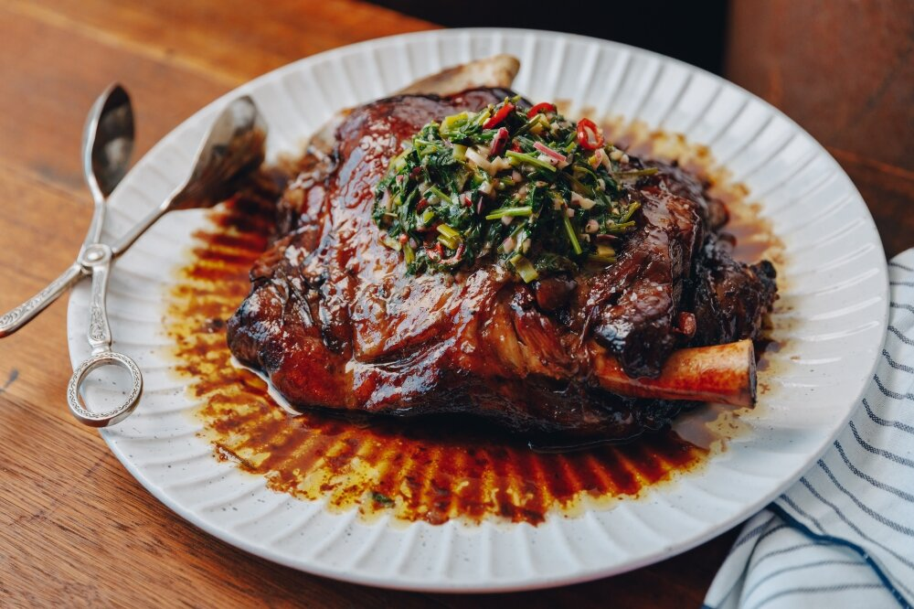
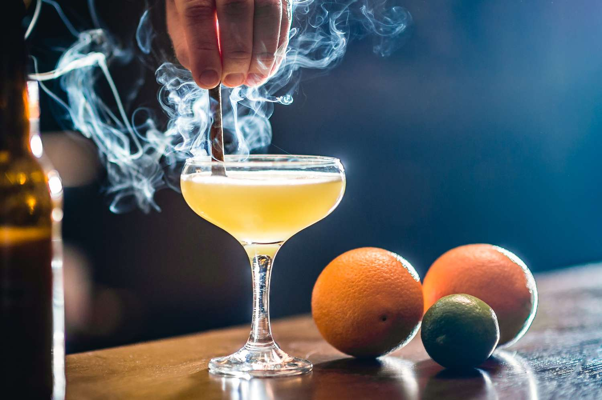
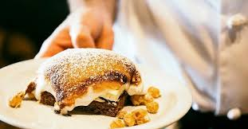

"Fire is our first flavor. We honor it with every dish."
Below is our head chef James Smith's signature dishes and cocktails.



Forged in flame, Ember & Ash is a celebration of contrast—where ancient techniques meet modern vision. Inspired by the raw, elemental power of fire, we reimagine the traditions of open-flame cooking through a contemporary lens. Every dish tells a story of earth, heat, and time, bridging past and present with every charred edge and glowing ember. At the heart of our kitchen is a deep respect for the primal act of cooking over fire. It’s more than a method—it’s a ritual. Wood smoke and searing flames coax bold, honest flavors from the finest ingredients, turning simplicity into something transcendent. Our dishes evoke the rugged beauty of the hearth, tempered by refined execution and creative flair. This is a culinary journey through smoldering textures and bold spices, where smoke becomes a signature note and every plate is a balance of intensity and elegance. At Ember & Ash, we invite you to savor the magic of fire—wild, untamed, and artfully composed.
"Fire is our first flavor. We honor it with every dish."
Below is our head chef James Smith's signature dishes and cocktails.